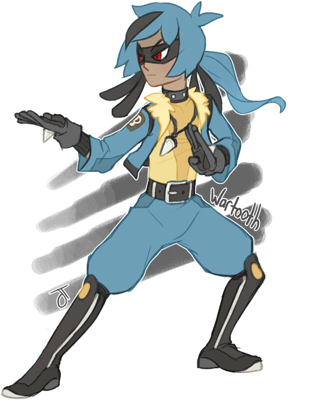

Jon Griffin
Personality: Jon has been shown to be extremely serious and mature for his age and to have great self-control. In battle, he is able to stay relatively calm in most situations and carefully look at the situation at hand. Being part of a highly-esteemed Aura Guardian family, Jon is proud of his lineage and works hard to meet the expectations placed upon him. Jon greatly admires his sensei, Riley, and aspires to become an Aura Guardian. Due to his lineage, Jon has the ability to sense and control Aura, although he is still a novice.
Age: 17
Gender: Male
Eye Color: Blue
Hair Color: Blonde
Skin Color: Caucasian
Hometown: Veilstone City
Home Region: Sinnoh
Trivia:
Jon trained with Riley and his Lucario on Iron Island to boost his Pokémon’s attacking power and Aura control and they have become good friends because of this.
Jon’s favorite food is a good salad.
Jon is the best fighter in the Agents group as he can fight relatively well without his Pokemon.
Jon does not like the concept of Mega Evolution because of the pain it sometimes inflicts on said Pokemon. This makes them butt heads with his Gallade because he loves it.
Jon always studies the regions he visits and puts them in a journal.
Pokémon:

Lucario♂
“Hunter”
Fighting/Steel
Ability: Justified
When Hunter gets hit by a Dark-type move, he becomes surrounded by a blue aura and his aura grows in strength, increasing his attack power.
Personality: Hunter is very fatherly towards Jon, seeing himself as his master in learning how to manipulate Aura. Despite this, he is friendly and gets along well with other Pokémon as well as with his Trainer, which can be attributed to the fact that he evolved from Riolu, who evolves from friendship. In battle, Hunter is a very powerful fighter and was able to take down opponents much larger than it even as a Riolu.
MOVES:
Flash Cannon (Steel)
Hunter puts his arms together and creates a silver ball of energy. A silver energy beam is fired from the ball at the opponent.
Aura Sphere (Fighting)
Hunter puts his hands together and creates a blue ball of energy in between them. Hunter then fires the ball at the opponent. Hunter can also fire smaller ones from just one hand.
Close Combat (Fighting)
Hunter repeatedly punches and kicks the opponent at a fast speed.
Bone Rush (Ground)
Hunter puts his paws together and spreads them apart, creating a light blue bone of energy. He then hits the opponent with it.

BURST
As a user of Burst, Jon can use many of the abilities of the Pokémon he combines with Hunter, his Lucario. Due to both Jon and Hunter being Aura Users, in his Burst Mode, Jon’s Aura control and martial skills skyrocket.
TECHNIQUES:
Using Bone Rush, Jon shapes the bone staff into a sword.
Using the Aura Blade, Jon unleashes many powerful slashes at a foe.
Jon coats his fists in Aura and rapidly punches and kicks an opponent.
Final Attack: Sky Painting
As a last resort, Jon exerts all of his Aura into the sky. He then brings it down as a powerful area-of-effect attack, destroying anything in a certain radius. The only downside is that Jon is immensely drained after using it.